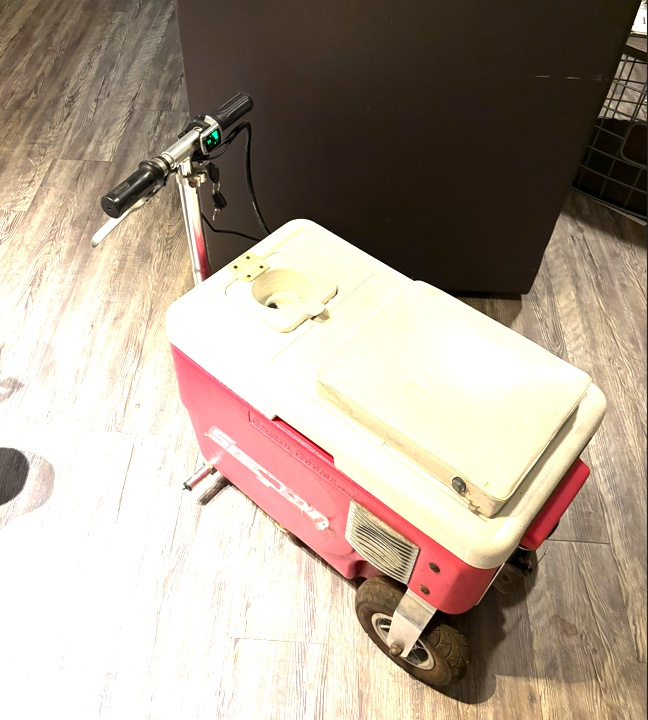
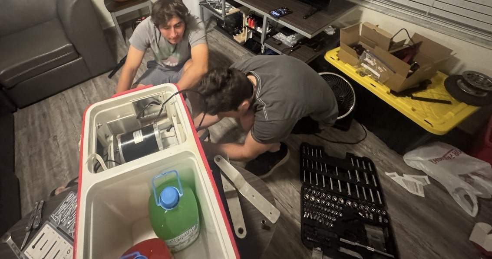
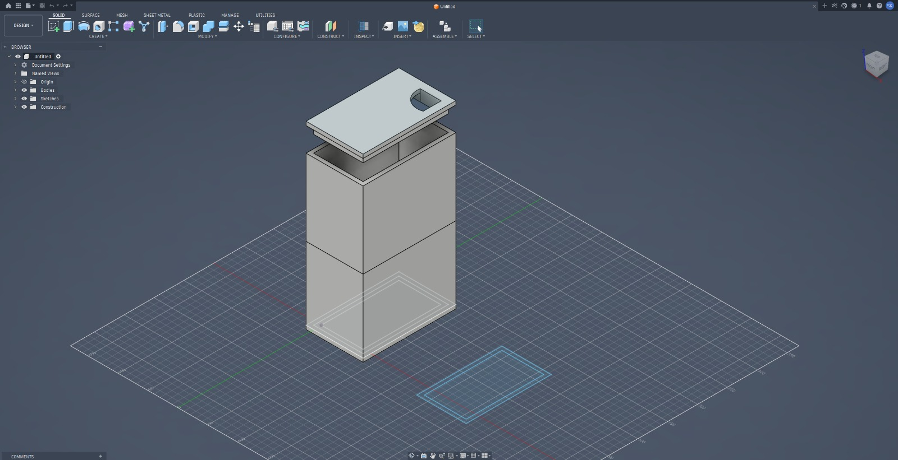

Overview
The cooler scooter build is a compact mobility project where space is limited and every design decision is visible. The project focuses on fitting components into a small platform while keeping the system rideable, serviceable, and safe.
Project Case Study
A compact electric scooter-style build where packaging, rider comfort, controls, wiring, and safety all matter.

The cooler scooter build is a compact mobility project where space is limited and every design decision is visible. The project focuses on fitting components into a small platform while keeping the system rideable, serviceable, and safe.
| Item | Role | Cost |
|---|---|---|
| Cooler body / frame | Compact platform | TBD |
| Scooter drive components | Mobility system | TBD |
| Battery system | Power source | TBD |
| Wiring/connectors | Power and signal routing | TBD |
| Controls/throttle | Rider input | TBD |
| Mounting hardware | Mechanical support | TBD |
| Wheels/drive hardware | Motion and support | TBD |
| Safety/inspection items | Ride checks and revision | TBD |
Build Process
Planned how the rider, cooler body, battery, wiring, and controls would fit together.
Worked through placement constraints, balance, structure, and access.
Routed power and control wiring in a compact space.
Set up rider input, position, and basic usability checks.
Tested balance, comfort, movement, vibration, and component security.
Adjusted mounting and wiring based on inspection after testing.
I learned that small vehicle projects are not simple just because they are small. A compact build forces tradeoffs between space, wiring, comfort, safety, and serviceability.
Photo Evidence

